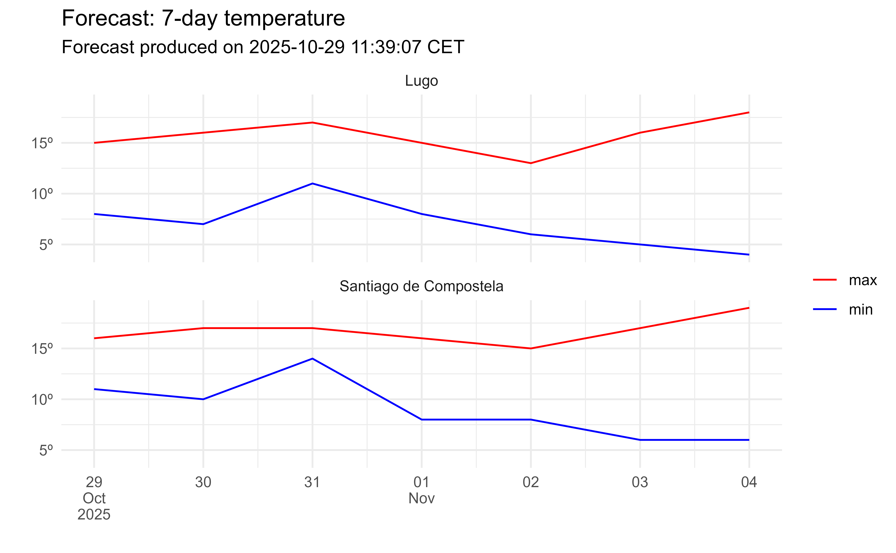
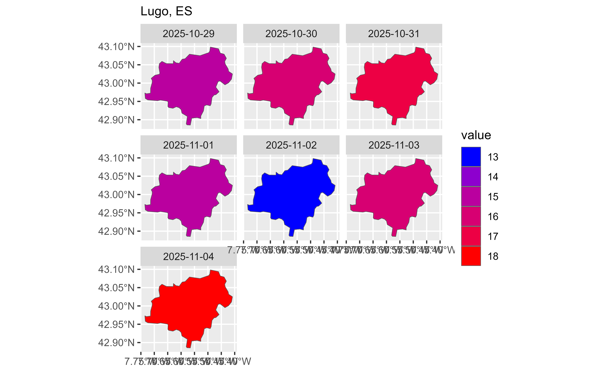

Forecast database by municipality
Source:R/aemet-forecast-daily.R, R/aemet-forecast-hourly.R
aemet_forecast.RdGet a database of daily or hourly weather forecasts for a given municipality.
Usage
aemet_forecast_daily(
x,
verbose = FALSE,
extract_metadata = FALSE,
progress = TRUE
)
aemet_forecast_hourly(
x,
verbose = FALSE,
extract_metadata = FALSE,
progress = TRUE
)Arguments
- x
A vector of municipality codes to extract. For convenience, climaemet provides this data on the dataset aemet_munic (see
municipiofield) as of January 2024.- verbose
Logical
TRUE/FALSE. Provides information about the flow of information between the client and server.- extract_metadata
Logical
TRUE/FALSE. OnTRUEthe output is a tibble with the description of the fields. See alsoget_metadata_aemet().- progress
Logical, display a
cli::cli_progress_bar()object. Ifverbose = TRUEwon't be displayed.
Value
A nested tibble. Forecasted values can be
extracted with aemet_forecast_tidy(). See also Details.
Details
Forecasts format provided by the AEMET API have a complex structure.
Although climaemet returns a tibble, each
forecasted value is provided as a nested tibble.
aemet_forecast_tidy() helper function can unnest these values an provide a
single unnested tibble for the requested variable.
If extract_metadata = TRUE a simple tibble describing
the value of each field of the forecast is returned.
API Key
You need to set your API Key globally using aemet_api_key().
See also
aemet_munic for municipality codes and mapSpain package for
working with sf objects of municipalities (see
mapSpain::esp_get_munic() and Examples).
Other aemet_api_data:
aemet_alert_zones(),
aemet_alerts(),
aemet_beaches(),
aemet_daily_clim(),
aemet_extremes_clim(),
aemet_forecast_beaches(),
aemet_forecast_fires(),
aemet_last_obs(),
aemet_monthly,
aemet_normal,
aemet_stations()
Other forecasts:
aemet_forecast_beaches(),
aemet_forecast_fires(),
aemet_forecast_tidy()
Examples
# Select a city
data("aemet_munic")
library(dplyr)
munis <- aemet_munic |>
filter(municipio_nombre %in% c("Santiago de Compostela", "Lugo")) |>
pull(municipio)
daily <- aemet_forecast_daily(munis)
#> ! HTTP 429:
#> Límite de peticiones o caudal por minuto excedido para este usuario. Espere
#> al siguiente minuto.
#> ℹ Retrying...
#> Waiting 3s for retry backoff ■■■■■■■■■■■■■
#> Waiting 3s for retry backoff ■■■■■■■■■■■■■■■■■■■■■■■■■■■■■■
#>
# Metadata
meta <- aemet_forecast_daily(munis, extract_metadata = TRUE)
glimpse(meta$campos)
#> Rows: 23
#> Columns: 5
#> $ id <chr> "id", "version", "elaborado", "nombre", "provincia", "fech…
#> $ descripcion <chr> "Indicativo de municipio", "Versión", "Fecha de elaboració…
#> $ tipo_datos <chr> "string", "float", "dataTime", "string", "string", "date",…
#> $ requerido <lgl> TRUE, TRUE, TRUE, TRUE, TRUE, FALSE, FALSE, FALSE, FALSE, …
#> $ unidad <chr> NA, NA, NA, NA, NA, NA, "Tanto por ciento (%)", "metros (m…
# Vars available
aemet_forecast_vars_available(daily)
#> [1] "probPrecipitacion" "cotaNieveProv" "estadoCielo"
#> [4] "viento" "rachaMax" "temperatura"
#> [7] "sensTermica" "humedadRelativa"
# This is nested
daily |>
select(municipio, fecha, nombre, temperatura)
#> # A tibble: 14 × 4
#> municipio fecha nombre temperatura$maxima $minima $dato
#> <chr> <date> <chr> <int> <int> <list>
#> 1 15078 2026-02-18 Santiago de Compostela 13 7 <df>
#> 2 15078 2026-02-19 Santiago de Compostela 12 6 <df>
#> 3 15078 2026-02-20 Santiago de Compostela 14 5 <df>
#> 4 15078 2026-02-21 Santiago de Compostela 17 3 <df>
#> 5 15078 2026-02-22 Santiago de Compostela 18 4 <df>
#> 6 15078 2026-02-23 Santiago de Compostela 19 5 <df>
#> 7 15078 2026-02-24 Santiago de Compostela 13 9 <df>
#> 8 27028 2026-02-18 Lugo 11 4 <df>
#> 9 27028 2026-02-19 Lugo 10 3 <df>
#> 10 27028 2026-02-20 Lugo 12 2 <df>
#> 11 27028 2026-02-21 Lugo 17 2 <df>
#> 12 27028 2026-02-22 Lugo 19 3 <df>
#> 13 27028 2026-02-23 Lugo 19 4 <df>
#> 14 27028 2026-02-24 Lugo 17 5 <df>
# Select and unnest
daily_temp <- aemet_forecast_tidy(daily, "temperatura")
# This is not
daily_temp
#> # A tibble: 14 × 14
#> elaborado municipio nombre provincia id version uvMax fecha
#> <dttm> <chr> <chr> <chr> <chr> <dbl> <int> <date>
#> 1 2026-02-18 13:02:13 15078 Santi… A Coruña 15078 1 2 2026-02-18
#> 2 2026-02-18 13:02:13 15078 Santi… A Coruña 15078 1 2 2026-02-19
#> 3 2026-02-18 13:02:13 15078 Santi… A Coruña 15078 1 3 2026-02-20
#> 4 2026-02-18 13:02:13 15078 Santi… A Coruña 15078 1 3 2026-02-21
#> 5 2026-02-18 13:02:13 15078 Santi… A Coruña 15078 1 3 2026-02-22
#> 6 2026-02-18 13:02:13 15078 Santi… A Coruña 15078 1 NA 2026-02-23
#> 7 2026-02-18 13:02:13 15078 Santi… A Coruña 15078 1 NA 2026-02-24
#> 8 2026-02-18 13:02:13 27028 Lugo Lugo 27028 1 2 2026-02-18
#> 9 2026-02-18 13:02:13 27028 Lugo Lugo 27028 1 2 2026-02-19
#> 10 2026-02-18 13:02:13 27028 Lugo Lugo 27028 1 3 2026-02-20
#> 11 2026-02-18 13:02:13 27028 Lugo Lugo 27028 1 3 2026-02-21
#> 12 2026-02-18 13:02:13 27028 Lugo Lugo 27028 1 3 2026-02-22
#> 13 2026-02-18 13:02:13 27028 Lugo Lugo 27028 1 NA 2026-02-23
#> 14 2026-02-18 13:02:13 27028 Lugo Lugo 27028 1 NA 2026-02-24
#> # ℹ 6 more variables: temperatura_maxima <int>, temperatura_minima <int>,
#> # temperatura_6 <int>, temperatura_12 <int>, temperatura_18 <int>,
#> # temperatura_24 <int>
# Wrangle and plot
daily_temp_end <- daily_temp |>
select(
elaborado, fecha, municipio, nombre, temperatura_minima,
temperatura_maxima
) |>
tidyr::pivot_longer(cols = contains("temperatura"))
# Plot
library(ggplot2)
ggplot(daily_temp_end) +
geom_line(aes(fecha, value, color = name)) +
facet_wrap(~nombre, ncol = 1) +
scale_color_manual(
values = c("red", "blue"),
labels = c("max", "min")
) +
scale_x_date(
labels = scales::label_date_short(),
breaks = "day"
) +
scale_y_continuous(
labels = scales::label_comma(suffix = "º")
) +
theme_minimal() +
labs(
x = "", y = "",
color = "",
title = "Forecast: 7-day temperature",
subtitle = paste(
"Forecast produced on",
format(daily_temp_end$elaborado[1], usetz = TRUE)
)
)

# Spatial with mapSpain
library(mapSpain)
library(sf)
#> Linking to GEOS 3.12.1, GDAL 3.8.4, PROJ 9.4.0; sf_use_s2() is TRUE
lugo_sf <- esp_get_munic(munic = "Lugo") |>
select(LAU_CODE)
#> ! The file to be downloaded has size 74.6 Mb.
daily_temp_end_lugo_sf <- daily_temp_end |>
filter(nombre == "Lugo" & name == "temperatura_maxima") |>
# Join by LAU_CODE
left_join(lugo_sf, by = c("municipio" = "LAU_CODE")) |>
st_as_sf()
ggplot(daily_temp_end_lugo_sf) +
geom_sf(aes(fill = value)) +
facet_wrap(~fecha) +
scale_fill_gradientn(
colors = c("blue", "red"),
guide = guide_legend()
) +
labs(
main = "Forecast: 7-day max temperature",
subtitle = "Lugo, ES"
)
#> Ignoring unknown labels:
#> • main : "Forecast: 7-day max temperature"
